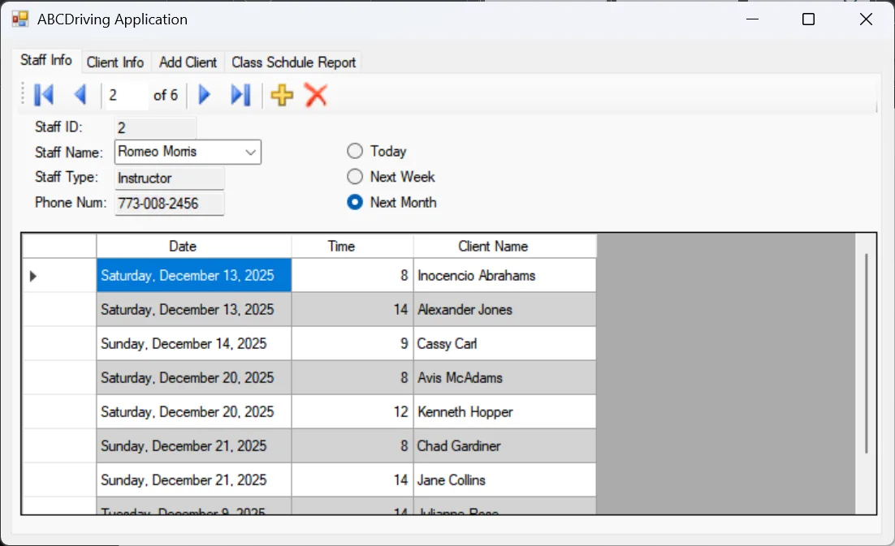

ABC Driving School Manager
A WinForms desktop app for managing clients, staff, and class rosters, built for office staff who needed something faster than spreadsheets, not a web app they didn't ask for.

Overview
A desktop application for a driving school's front office, managing client records, instructor/staff records, and which classes each person is enrolled in, backed directly by a SQL Server database over raw ADO.NET rather than an ORM.
The Problem
The office's existing process was a mix of spreadsheets and paper rosters, which meant no single source of truth for who was enrolled in what, and no fast way to pull up one person's full schedule. The brief was explicitly a desktop tool: the staff wanted something that opened instantly and worked offline on the office machine, not a browser tab.
Architecture & Approach
WinForms front end talking directly to SQL Server through ADO.NET, chosen deliberately over EF Core here since the queries were simple enough that an ORM would have added indirection without much benefit, and direct ADO.NET made the data-bound grid refresh logic easier to reason about.
- Data-bound grids: a client or staff ID entered into a lookup field reloads that person's class schedule immediately via a bound
DataGridView, without a manual refresh step. - Parameterized queries: every lookup uses parameterized ADO.NET commands, avoiding both SQL injection and the query-plan churn of building SQL strings by hand.
Results
Front-office staff can now pull up any client's or instructor's full schedule by ID in a single lookup, replacing the manual cross-referencing across spreadsheets that the previous process required.
What I'd Do Differently
- Add a lightweight repository layer around the raw ADO.NET calls. It's fine at this scale, but it started to show duplication once enough screens needed similar lookups.
- Add basic audit logging on roster changes, since "who moved this student to a different class" came up more than once during testing.